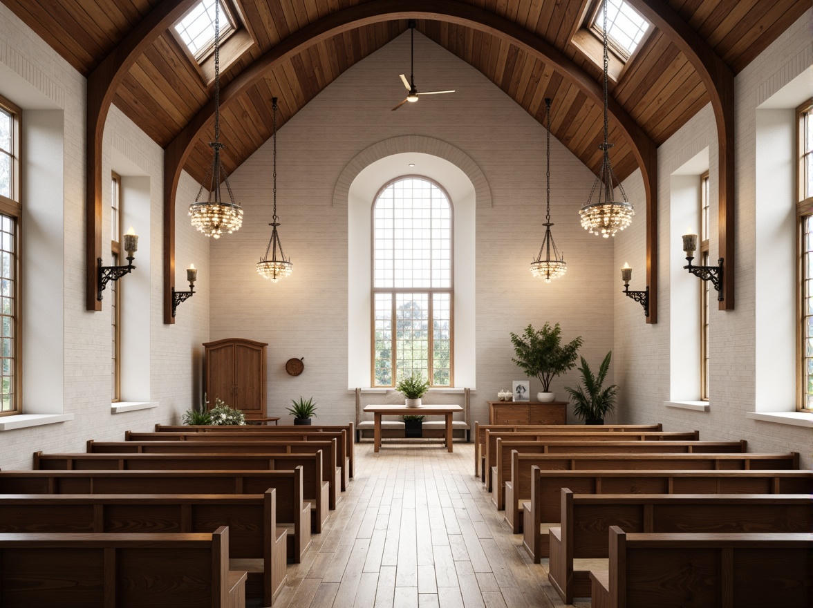
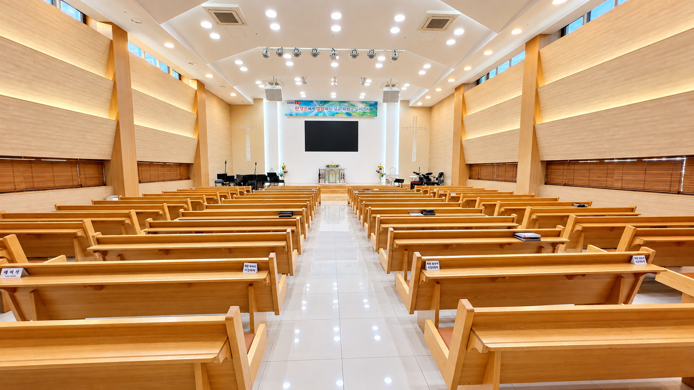
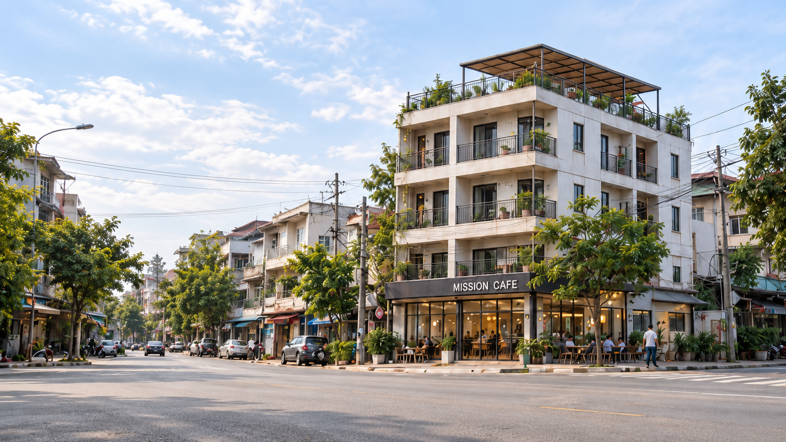

아산 배방 · 기독교한국침례회
예배와 말씀으로 함께하는 따뜻한 공동체입니다.
WELCOME
아산 배방읍에 위치한 침례교 하늘사랑교회입니다. 처음 오시는 분도 편안하게 예배드릴 수 있습니다.

WORSHIP
주일 오전 9:00 · 주일 오전 11:00 · 수요 저녁 7:30

MEDIA
주일 강단의 말씀을 짧은 숏츠로 나눕니다.
MISSION VISION CENTER
동남아시아를 거점으로 예배·교육·선교사 지원과 자립사업을 연결하는 복합 선교센터를 준비합니다.

LOCATION
충청남도 아산시 배방읍 월천2길 33